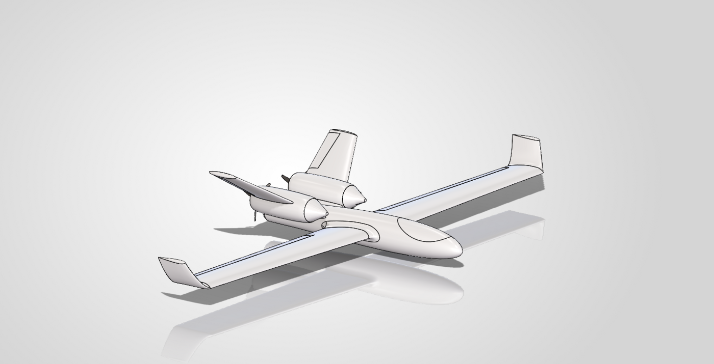

Twin-Boom Pusher UAV IN PROGRESS
A single-engine, twin-boom pusher UAV designed for Eirspace to test a substantially different aerodynamic configuration from their existing aircraft — currently in CFD analysis ahead of manufacturing.
Project Overview
Eirspace tasked me with designing a test aircraft that explores a substantially different aerodynamic configuration to their existing UAS — not to replace it, but to generate real comparative data. I know this design isn't inherently "better"; it's a different architecture, built specifically so it can be measured against the original.
Where the previous aircraft distributed its motors around the wing, this concept moves everything to a single rear pusher motor, wraps a sleeker central fuselage around the electronics and payload bay, and adds proper three-axis control through dedicated ailerons, elevator and twin rudders on a twin-boom H-tail — control surfaces the previous aircraft largely didn't have.
How It Compares
The point of this aircraft is comparison, so here's the configuration change area by area:
| Area | Previous drone | New drone | Reason for testing |
|---|---|---|---|
| Propulsion | Motors around / under the wing | Single rear pusher motor | Cleaner wing airflow, less propulsion hardware |
| Fuselage | More conventional, boxier centre body | Sleek, streamlined central fuselage | Lower frontal area, lower parasite drag |
| Wing | Previous wing geometry | Clean tapered aerodynamic wing | Better lift-to-drag, more efficient cruise |
| Tail architecture | Limited / no yaw-control surfaces | Twin-boom H-tail | Strong pitch/yaw authority, clear pusher path |
| Rudders | No dedicated vertical rudders | Twin vertical rudders | Direct yaw control, better crosswind handling |
| Elevator | Limited tail pitch control | Dedicated horizontal elevator | Predictable pitch authority, easier trimming |
| Ailerons | Previous control arrangement | Dedicated outboard ailerons | Better, faster direct roll control |
| Prop airflow | Motors/props interact with wing directly | Rear prop separated from main wing | Main wing sees cleaner incoming airflow |
| Internal volume | Existing packaging | Large central fuselage | Room for battery, flight controller, payload |
| Modularity | Existing construction | Central body + wings + booms + tail | Sections can be built and modified separately |
The Five Strongest Arguments
Cleaner Aerodynamic Wing
No motor nacelles or propulsion hardware around the wing — a chance to test whether removing that interference drag actually improves efficiency.
Sleeker Fuselage
Narrow rounded nose tapering into the main equipment bay, then down to the 30mm rear motor section — smoother cross-sectional changes to cut form drag.
Proper Three-Axis Control
Dedicated ailerons, elevator and rudders give independent control over roll, pitch and yaw — a real asset for testing autonomous flight later.
Twin-Boom Synergy
The booms let the tail sit behind the propeller without a fuselage running through the prop location, and give large vertical-tail area without one big fin.
A Genuine Comparison Platform
Not a claim that every feature is superior — a different configuration, built specifically to be measured against the original aircraft.
Current Design Specification
The approximate architecture for this prototype, as it stands going into CFD:
- 600mm wingspan
- ~320mm central fuselage
- ~65mm maximum fuselage width
- 30mm circular rear motor section
- Single A2212-class rear pusher motor
- Tapered main wing
- Twin rear booms
- Twin vertical fins / rudders
- Horizontal stabiliser + elevator
- Outboard ailerons
- Large central electronics / battery / payload compartment
What Gets Measured
Once this moves past CFD and into a built, flight-tested aircraft, the plan is to compare it against the previous Eirspace UAS across:
Current Status
Design is complete and currently going through CFD simulation to check the aerodynamic assumptions above before committing to manufacturing. Manufacturing and flight testing come after that — this page will get updated with real CFD output, build photos, and eventually flight data as each of those happens.
The honest framing, for now: this design explores a streamlined single-pusher, twin-boom configuration meant to reduce propulsion/wing interference, add independent three-axis control, and improve aerodynamic packaging. Whether that actually pays off gets settled by CFD and flight testing — not by how it looks in CAD.